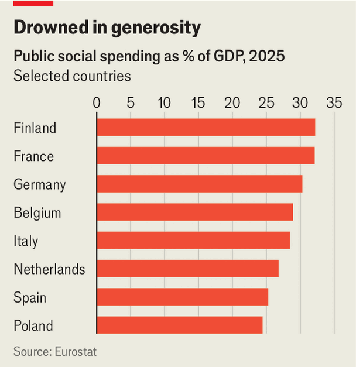

Europe has been living beyond its means. Now the bills are due
It accounts for half the world’s social spending, but its fractured politics make cuts difficult
Nov 12th 2026
Europe’s COBBLED squares have echoed this autumn to the sound of police sirens and shattered glass. The continent is undergoing one of those periodic spasms, when parliamentary politics struggle to handle social discontent. In France and Germany, protests began against underinvestment in education. In Spain and Italy, it was a housing crisis. Across the continent there is anger at rising prices. The shared underlying problem is this: many Europeans want levels of public spending they can no longer afford, while fragmented parliaments and populist politics make it almost impossible to fix the problems.
For decades Europe has offered its citizens an unusually comfortable level of benefits and protections. European Union countries spend 10% of GDP on public pensions, on average, nearly twice the share in America. EU countries devote nearly 30% of GDP to public social spending, compared with less than 20% in America. Angela Merkel, a German former chancellor, once noted with disapproval that Europe accounts for 7% of the world’s population, 25% of global GDP and 50% of global social spending. Europe, she concluded, “will have to work very hard to maintain its prosperity and way of life.”
Some countries, notably hers and the Nordics, did the hard work and made the protective state more affordable, although even Germany is now facing a crunch over social spending. Less responsible countries have kept on borrowing and ducking hard choices. Five have public debt levels at or above 100% of GDP, including France, Italy and Spain. Ten, including Belgium, France and Italy, are now subject to the EU’s “excessive-deficit procedure”. This is a sort of naughty step, designed to put those who break the union’s rules (which cap debt at 60% of GDP and budget deficits at 3% of GDP) under scrutiny and correct their wayward behaviour.
Governments in such countries are under fresh strain from higher interest rates on their debt. France, for example, will spend €91bn ($102bn) on interest on its borrowing in 2027, up from €79bn in 2026. Meanwhile, rising prices and higher energy costs make it politically difficult to cut pension and welfare payments.
The clamour from populists is drowning out those who try to talk sense about the budgetary arithmetic. Allianz, a European insurer, has devised a global “social resilience index”, to measure the vulnerability of different countries to unrest. It calculates that between 2020 and 2025 70% of strikes, riots and civil unrest took place in “advanced economies…where prosperity coexists with political polarisation and weak reform capacity”. Ludovic Subran, chief investment officer at the insurer, notes that this mix is particularly combustible because cost-of-living pressures are hurting so many people.

Take Belgium, which will have a budget deficit in 2026 of 5% of GDP, and debt of 112% of GDP. On November 6th its prime minister, Bart De Wever, offered to resign over his government’s failure to agree on a budget for 2027. The populist-nationalist leader has failed to wrangle a five-party coalition into agreeing on deficit cuts, for example by modestly raising VAT. Or consider the Netherlands, whose young centrist prime minister, Rob Jetten, is running the country’s first minority government since the second world war, and has struggled to secure support for his budget.
Even in fiscally responsible Germany Friedrich Merz, the chancellor, has said that the welfare state is “no longer affordable”. Last year social spending rose by 6%; it now accounts for around 30% of GDP (see chart), two percentage points above pre-covid levels. Social-security charges, levied for pensions, health care and the like, are equivalent to around 42% of gross wages; without reform these are projected to reach nearly 50% by 2040 (employers cover half these costs). A sluggish economy and Germany’s deficit-limiting debt brake mean the federal government is in a tight fiscal spot, with more than €100bn of (cumulative) consolidation needed by 2030. Some two-thirds of Germans agree that the welfare state is no longer affordable; yet a majority oppose most specific proposals for cuts.
By far the most worrying is France. It has battled each year to pass a budget ever since President Emmanuel Macron rashly called snap parliamentary elections in 2024, which shrank his centrist governing minority. The lower house of parliament, once dominated by big parties of the left and the right, is now split into three hostile blocs. The noisiest components are the populist-left of Jean-Luc Mélenchon and the populist-right of Marine Le Pen. This pair are also pollsters’ favourites to face each other in the run-off in the presidential election next spring. The climate in parliament, says Michel Barnier, a centre-right former prime minister and now a member of the lower house, is “pre-insurrectional”.
Against this backdrop Sébastien Lecornu, the fourth prime minister in three years, is trying to get a budget through parliament by the end of the year. His plan, which would curb the budget deficit from 5.4% of GDP in 2026 to a still-hefty 5% in 2027, involves €43bn of savings. Most controversially, these include the freezing in nominal terms of most pensions (the single-biggest budget item) and civil-service pay. The opposition has cried foul. Teachers and other public-sector workers have joined the marches. Protests have broadened into anger that pensioners are the casualties of a debt problem. “My placard is crappy, so is my pension” read one home-made sign at a recent demo in Paris.
As ever, voters want public finances fixed, but not at their expense. A poll suggests that 85% of the French think it is urgent to curb public debt, but 56% also think the pension age should be lower. Mr Mélenchon and Ms Le Pen each vow not merely to protect pensions but also to bring down the retirement age. Both their parties are against the proposed pension freeze. Roland Lescure, the finance minister, insists that the government will pass a budget, even if it has to use special constitutional measures to force it through parliament. “When I say we should freeze pensions, it’s not to annoy pensioners,” he says. “Rather it’s to say: if we want to spend more on young people, others will have to pay.”
A decent welfare state, with dignity in ill health, poverty and old age, is as central to the idea of what Europe is all about as are walkable cities and long holidays. The ageing continent cannot sidestep tough choices about what sort of support it can continue to afford. Yet Europe is losing its capacity to have a measured debate about how to do this. If governments cannot find a way to forge majorities for difficult decisions, those choices will end up being imposed by the bond markets in a crisis. ■